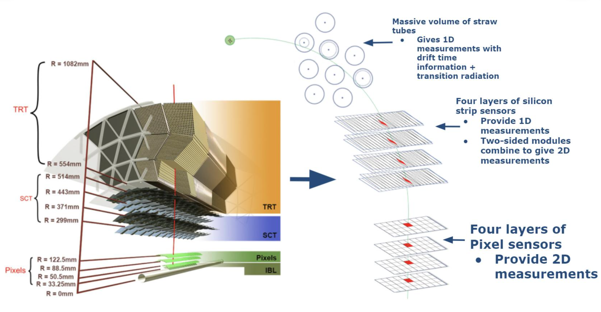

Conceptual tracking illustration (not to scale). The curved track is fitted using measurements from successive detector layers.

Detailed layer and sensor view: Pixel sensors provide two-dimensional measurements; stereo SCT modules combine strip measurements; TRT straws provide drift-time measurements and transition-radiation information. Reference: X. Ai et al., ACTS for gaseous tracking detectors (FTCF 2024), slide 6.
From detector hits to transverse momentum
1. Fit a curved track. Position measurements across the Pixel, SCT, and TRT layers are combined into a trajectory. The track fit determines its curvature using the known magnetic field. The geometry below explains the basic idea using a circular arc.

Original explanatory SVG. The three-point sagitta construction illustrates the geometry of curvature; ATLAS fits many detector measurements.
2. Determine the curvature radius. For a circle, the chord length L and sagitta s form a right triangle. The Pythagorean theorem gives
For a small sagitta, s ≪ L, the second term is small, so R ≈ L2/(8s). Less bending means a smaller sagitta and a larger curvature radius.
3. Convert curvature to momentum. In a uniform magnetic field, the transverse Lorentz force is the force required to bend the transverse momentum:
Here z = q/e is the signed charge number. With B ≈ 2 T and the usual singly charged track assumption (|z| = 1), pT [GeV/c] ≈ 0.6 R [m]. The bending direction gives the charge sign; identifying the particle species is not required under this charge assumption.
Educational approximation: the interactive arcs use a uniform 2 T solenoidal field and idealized measurements. Real ATLAS track fits account for magnetic-field variations, measurement uncertainties, material interactions, and multiple scattering. Layer radii follow ATLAS Inner Detector documentation and published barrel geometry specifications. Field strength: ATLAS Magnet System.